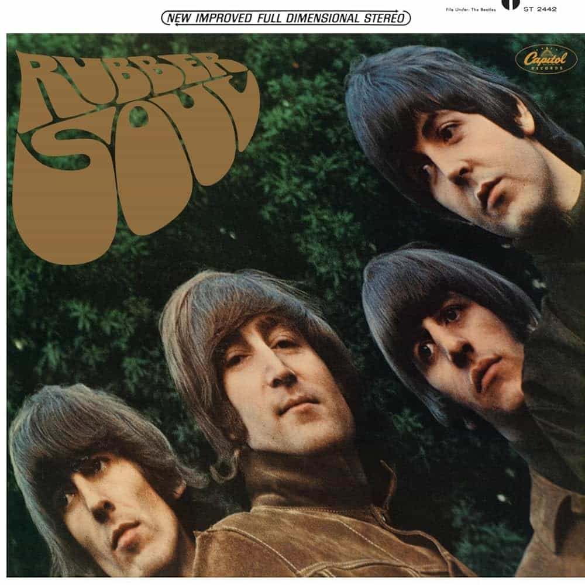

Rubber Soul (1965)
For me where the Beatles really begin to find their sound. Rubber Soul is a great and much-needed turning point that sets the Beatles on a path towards not just stardom, which they already had, but greatness. Drive My Car is an homage to their original sound, but on the second track they show they're not messing around with Norwegian Wood, a hilarious and folksy tune from John about a missed opportunity with a girl. From there, they shine through with their early selves on tracks like You Won't See Me and The Word, but also kill it in evolutionary tracks like Nowhere Man, Michelle and I'm Looking Through You. Of course, In My Life stands the test of time as one of the most poignant and sentimental songs ever and my favorite cut from a huge step in the Beatles' discography.
Drive My Car - 2:28
Norwegian Wood (This Bird Has Flown) - 2:04
You Won't See Me - 3:19
Nowhere Man - 2:43
Think For Yourself - 2:18
The Word - 2:43
Michelle - 2:42
What Goes On - 2:48
Girl - 2:31
I'm Looking Through You - 2:26
In My Life - 2:26
Wait - 2:14
If I Needed Someone - 2:22
Run For Your Life - 2:21